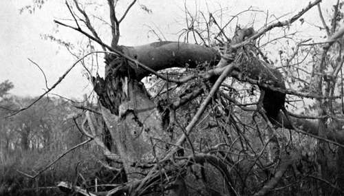
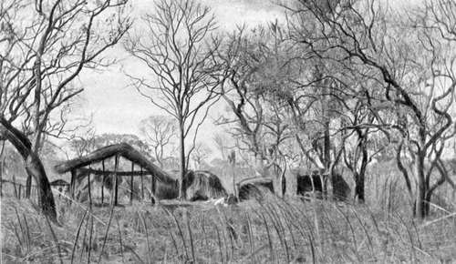

Memories Of Big Game Hunting. Part 8
Description
This section is from the book "Wild Life In Central Africa", by Denis D. Lyell. Also available from Amazon: Wild Life in Central Africa.
Memories Of Big Game Hunting. Part 8
A few days after this I came on a small herd of elephants, but not having taken out an elephant licence, had to leave them alone. Strange to say I saw this herd within 300 yards of the place where a white elephant hunter had been killed by a cow elephant the previous year. The natives told me that this cow was still with the herd, and when I saw the elephants and pointed to them, the villagers I had with me did not wait, but cleared off as if the devil was after them.
Tree Broken By An Elephant. (524m. in circumference.)
Not far from here I got a photograph of a very large tree broken by a bull elephant, and it measured just under the place it was broken 52½in. in circumference. As far as I can remember it was an " nkuyu " tree, which is soft and stringy in the wood. Anyhow, it was an example of what a big bull elephant is capable of in the way of muscular strength.
The district under the Cholo range is flat, and game is most abundant, comprising many eland, buffalo, waterbuck, zebra, hartebeest, and reedbuck. Elephants are often found, and I saw the fresh spoor of a bull rhino one morning.
Close to the Shire River, that rare and lovely antelope, the inyala, exists, and in the Cholo hills sable antelopes are fairly plentiful. Bushbuck, too, are numerous all over the place, and some of them have good heads. I shot a reedbuck one day, the best I saw out of quite fifty of these animals, which are found in lots of from a couple to five or six animals, and it had a very pretty pair of wide-set horns measuring 17¾in. from tip to tip, and 14m. along the curve.
It is possible to reach Chiromo in about four days from Chinde on the coast, and as there are plenty of boys looking for work during the dry season, which is the best shooting time, a sportsman who is in a hurry could not find anywhere in Africa a finer shooting ground. The heat is very great during the months before the rains, and if a man does not relish a tropical climate he had better not go there ; but on the other hand if he wants good buffalo, eland, waterbuck, and bushbuck heads he is almost certain to get them there. Moreover, he has a very good chance, if he is *a lucky man, of coming on lions, although during several trips there I have been unfortunate in not seeing any. It is probably the best district for lions in Nyasaland, and a good many have been killed there. In the rainy season, when the lions find the game difficult to catch, they often enter the township of Chiromo, and some grim tragedies have taken place there, many natives having been seized and killed, in some cases almost at the doors of the white inhabitants.
It was a great relief to get away from the plains by climbing the steep path at the top of the Cholo range, and I remember the lovely views of the game country stretching away in the blue distance, with many a grass fire sending up clouds of black smoke, which sometimes hung in the air, forming great long bars across the horizon.
The buffaloes leave the marsh in the rainy season and go to the top of the range, doubtless for coolness, and to get away from the flies, and perhaps, also, for a change of food. I noticed a good deal of old spoor on the plateau.
Again let me change the scene to the eastern border of Nyasaland, which is a very broken country, full of high hills and small ranges. I had gone to a place near Mausi Hill to get specimens of eland and sable antelopes to send to a South African museum, and I had passed along the valley of the Tuchila River to get there. The country was covered with big thorn trees, the stems of which often have a sickly appearance, as some are yellow, others an ochre, and many a nasty green colour.
Besides these large trees the vegetation is full of small thorns and sharp grass, which soon make a pair of bare legs very ugly, and some of these deep scratches are apt to fester, unless a man's blood is in good order.
The Tuchila Plains, as this place is often called, used to be a fine game country in the old days, and elephants were once abundant there ; but constant persecution has made them trek to safer regions. When I got round the base of Machemba Hill, which has several other large single hills in close proximity, such as Nchesie, I came, after trudging for a few miles, to a small stream called Nandeu. Here the headman of the small village on its banks was named Beni, and he had served several years in the King's African Rifles, a fine corps of native soldiers. He showed me his medal for the Ashanti campaign, in which he took part, and he was a very civil sort of man, and offered to get another man and show me the best game country ahead. While he was away I had some lunch, and the carriers got a rest and some food. Then, Beni having returned with a friend, we started off through the bush for the country right under Mausi (pronounced "Ma-usi") Hill. Here we came to a dirty waterhole, so, as game spoor was thickly imprinted on the ground in every direction, I put my tent up under a big tree.
A Hunting Camp In The Bush
At three o'clock I went out with Beni and the other man, taking besides about six men to carry in any meat I got. The guide took me through some fairly open country, covered with short, stiff grass and full of thorn trees, and we had not gone far before I sawr a herd of sable antelopes. Telling the men to sit down and keep quiet, I managed, with a good lot of trouble and a plentiful amount of scratches, to get within 150 yards of the game. One bull was very black, so I thought he would likely carry a good head, and I fired at him. At the shot he ran off with the herd, but stood after going a short distance, when I fired again and dropped him. I then killed another male before the herd had vanished.
Continue to:
- prev: Memories Of Big Game Hunting. Part 7
- Table of Contents
- next: Memories Of Big Game Hunting. Part 9